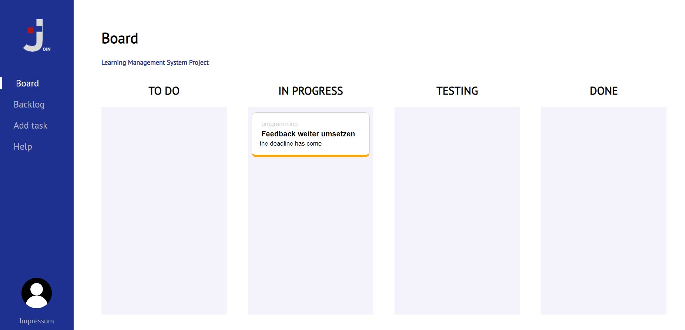

HELP
How to use the Join app- Create a task on the "Add Task" page
- On following "Backlog" page you can find and edit the created tasks
- Click on a task field to edit it. Here you have the possibilites to move it to the "Board" page, to edit it or to delete it 
- The tasks sent from the "Board" page are displayed first in the "To Do" column and can be moved with drag & drop depending on the processing status.
- Click on the task to edit it. Here you have the possibilites to send it to the "Board" page, to edit it or to delete it too